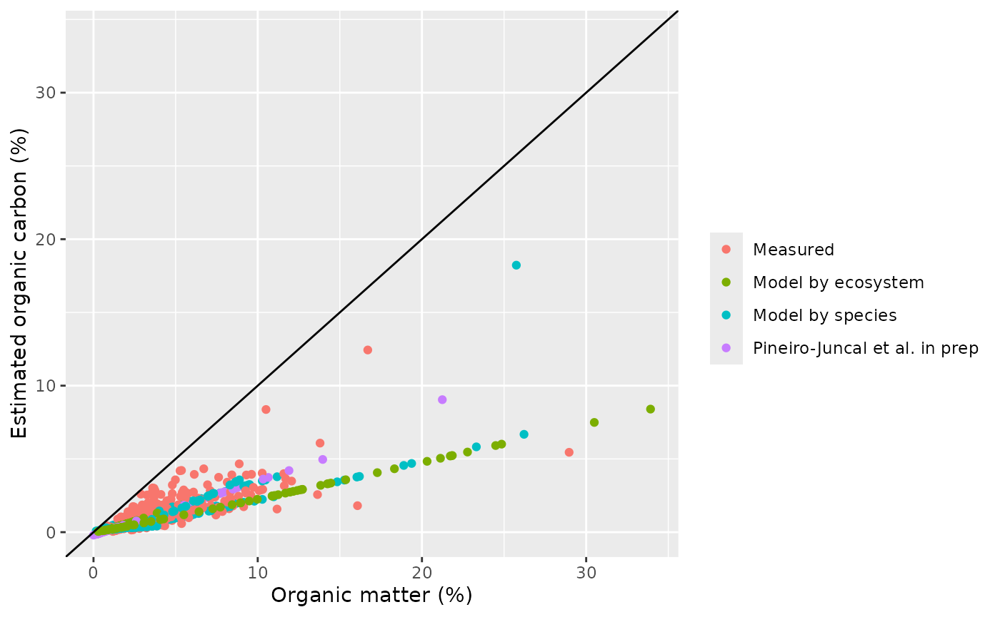
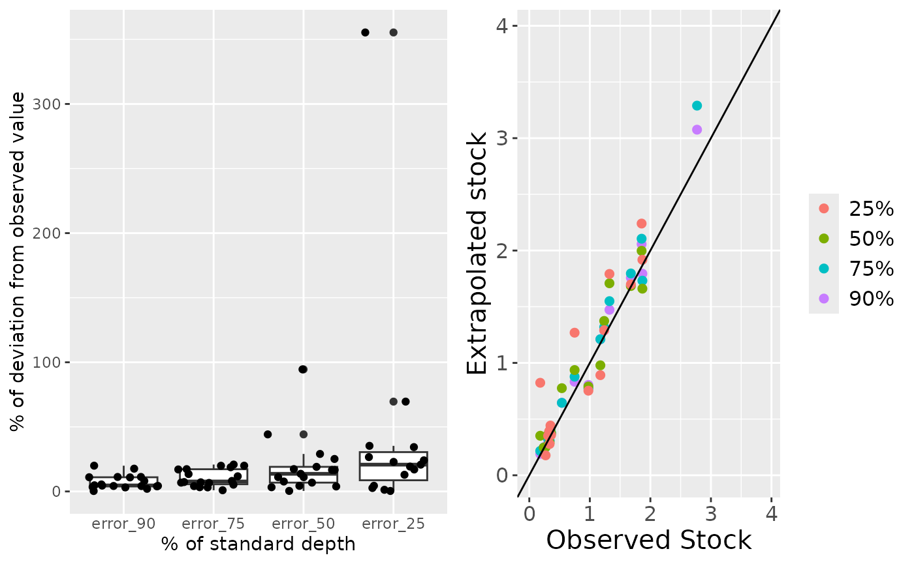
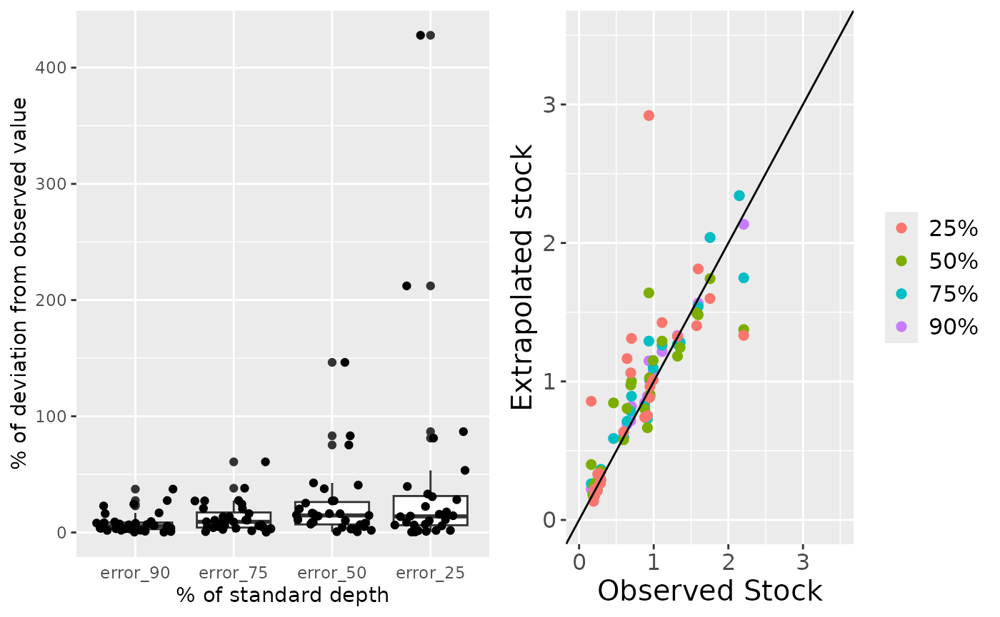

In this vignette we will use the example data from the BlueCarbon library to estimate the organic carbon stocks in the first 75 cm and 1 meter of the soil and the average organic carbon sequestration rates to these soils in the last 100 and 200 years.
Load example data
We load and stored them as dataframes. The first dataframe (core_comp) has field measurement data that we will use to estimate soil compaction at core collection. The second dataframe (bluecarbon_data) has core field information and laboratory data that we will use to correct core compaction, modelize and estimate organic carbon content in each sample from organic matter content, and to estimate the organic carbon stocks and sequestration rates. The core field information and laboratory data includes: sampling site, core ID, blue carbon ecosystem, dominant species, core compaction percentage, sample minimum depth, sample maximum depth, dry bulk density, organic matter content and (if available) organic carbon content and sample age.
Core compaction estimations
Many field methods to extract soil cores can lead to the compaction of the material retrieved (e.g. manual percussion).

The compaction percentage can be estimated knowing the difference between the original surface level of the soil and the surface level of the soil withing the sampler after core insertion and before retrieval.
compaction<-estimate_compaction (core_comp,
core= "core",
sampler_length = "sampler_length",
internal_distance = "internal_distance",
external_distance = "external_distance")
#> Warning in estimate_compaction(core_comp, core = "core", sampler_length =
#> "sampler_length", : Removing cores with missing data: Sm_03_04We got a warning about one core, core Sm_03_04, that has been removed from the final dataframe, as there was missing data. We can look at this core in the example data to see which data was missing.
core_comp[core_comp$core=="Sm_03_04",]
#> core sampler_length internal_distance external_distance
#> 30 Sm_03_04 NA NA NAIn this case, core Sm_03_04, didn’t have data about any of the three variables needed. This is the first 10 rows of the resulting dataframe, including a column with the core compaction percentages.
head(compaction,n=10)
#> core sampler_length internal_distance external_distance compaction
#> 1 Sg_01_01 200 35 25 5.714286
#> 2 Sg_01_02 200 45 35 6.060606
#> 3 Sg_01_03 200 86 76 8.064516
#> 4 Sg_02_01 200 10 0 5.000000
#> 5 Sg_02_02 200 60 50 6.666667
#> 6 Sg_02_03 200 78 68 7.575758
#> 7 Sg_03_01 200 52 42 6.329114
#> 8 Sg_03_02 200 1 1 0.000000
#> 9 Sg_03_03 200 98 78 16.393443
#> 10 Sg_04_01 200 21 1 10.050251Decompact cores
Core compaction does not affect to the final stock of the core. However, it does affect the depth of the core samples. As stocks are given until a known soil depth to be able to compere among areas (e.g. the first 1m), the depth of the samples is needed to properly estimate the final stock.
We use function decompact() to estimate de decompacted minimum and maximum depth of each sample before stock estimation. Furthermore, as compaction reduce the volume of the samples, dry bulk density has to be corrected. This can be done by estimating the corrected volume by: multiplying the corrected thickness of the sample (corrected maximum depth - corrected minimum depth) by the area of the core; or, if compacted dry bulk density is provided, function decompact() will correct it. To provide compacted dry bulk density the name of the column has to be specified in the function parameter “dbd” as, by default, this parameter is NULL and the function assumes that it was not provided.
decompact() has 6 parameters:
“df” Data.frame with core properties
“core” Character Name of the column with the id of the core to which the sample belongs
“compaction” Character Name of the column with core compaction IN PERCENTAGE, as calculated with [estimate_compaction()].
“mind” Character Name of the column with minimum depth of the sample (depth at the top of the sample)
“maxd” Character Name of the column with maximum depth of the sample (depth at the bottom of the sample)
“dbd” Character Name of the column with dry bulk density
We don’t need to specify the name of the columns as in the example data the names are the same as the default names. We DO need to specify the dry bulk density column name as by default this parameter is NULL.
bluecarbon_decompact <- decompact(bluecarbon_data, dbd="dbd" )
#> Warning in decompact(bluecarbon_data, dbd = "dbd"): Setting compaction = 0 for
#> these cores: Sm_03_04, Sm_03_04, Sm_03_04, Sm_03_04, Sm_03_04, Sm_03_04,
#> Sm_03_04, Sg_10_02, Sg_10_02, Sg_10_02, Sg_10_02, Sg_10_02, Sg_11_03, Sg_11_03,
#> Sg_11_03, Sg_11_03, Sg_11_03, Sg_11_03, Sg_11_03, Sg_11_03, Sg_11_03, Sg_11_03,
#> Sg_11_03, Sg_11_03, Sm_05_01, Sm_05_01, Sm_05_01, Sm_05_01, Sm_05_01, Sm_05_01,
#> Sm_06_01, Sm_06_01, Sm_06_01, Sm_06_01, Sm_06_01, Sm_06_01The warning has given a list of cores that has no compaction percentage data. The function assumes that these cores were not compacted in the field and sets compaction to zero.
Here are the first 10 rows of the final dataframe, with corrected minimum and maximum sample depth and dry bulk density.
head(bluecarbon_decompact,n=10)
#> site core ecosystem species compaction mind maxd dbd
#> 1 Sg_01 Sg_01_01 Seagrass Posidonia oceanica 5.714286 0 1 0.7352912
#> 2 Sg_01 Sg_01_01 Seagrass Posidonia oceanica 5.714286 1 2 0.9754336
#> 3 Sg_01 Sg_01_01 Seagrass Posidonia oceanica 5.714286 2 3 0.8698411
#> 4 Sg_01 Sg_01_01 Seagrass Posidonia oceanica 5.714286 3 4 1.0272564
#> 5 Sg_01 Sg_01_01 Seagrass Posidonia oceanica 5.714286 4 5 0.9307887
#> 6 Sg_01 Sg_01_01 Seagrass Posidonia oceanica 5.714286 5 6 1.4696196
#> 7 Sg_01 Sg_01_01 Seagrass Posidonia oceanica 5.714286 6 7 1.0500201
#> 8 Sg_01 Sg_01_01 Seagrass Posidonia oceanica 5.714286 7 8 0.7396556
#> 9 Sg_01 Sg_01_01 Seagrass Posidonia oceanica 5.714286 8 9 0.7380564
#> 10 Sg_01 Sg_01_01 Seagrass Posidonia oceanica 5.714286 9 10 0.6777988
#> om oc age mind_corrected maxd_corrected dbd_corrected
#> 1 6.554329 NA 8 0.000000 1.060606 0.6932745
#> 2 NA NA 13 1.060606 2.121212 0.9196945
#> 3 7.382634 NA 15 2.121212 3.181818 0.8201359
#> 4 NA NA 22 3.181818 4.242424 0.9685560
#> 5 8.026646 NA 29 4.242424 5.303030 0.8776007
#> 6 NA NA 35 5.303030 6.363636 1.3856413
#> 7 7.349944 NA 38 6.363636 7.424242 0.9900190
#> 8 NA NA 44 7.424242 8.484848 0.6973896
#> 9 9.431279 NA 46 8.484848 9.545455 0.6958817
#> 10 NA NA 51 9.545455 10.606061 0.6390675Estimation of organic carbon from organic matter
There is a well-known linear relation between organic carbon and organic matter content in soils. This correlation can change between ecosystems and sampling sites due to changes in organic matter composition among other factors. Therefore, it is recommended to estimate this correlation for each batch of samples. This function model a linear correlation between organic matter and organic carbon content in your samples and predict the content of organic carbon for those samples were there is no organic carbon values. Estimation of organic carbon is done by means of linear regressions on log(organic carbon) ~ log(organic matter). It gives back a organic carbon value for each organic matter value provided. If there is a organic carbon value for that sample it return the same value, else, generates a model for that site, else, model for species, else, a model for that ecosystem. If any model can be created due to the low number of samples (<10), or the parameters of the created models are too poor, it uses the equations in Fourqurean et al. (2012) for seagrasses, Maxwell et al. (2023) for salt marshes and Piñeiro-Juncal (in prepp) for mangroves to estimate the organic carbon. It is unlikely, but possible, that a model will predict a higher organic carbon than organic matter content. As this is not possible in nature, the function will give a warning and it is recommended to discard that model.
Fourqureanet al. (2012) Seagrass ecosystems as a globally significant carbon stock. Nat. Geosci.5, 505–509. https://doi.org/10.1038/ngeo1477
Maxwell et al. (2023) Global dataset of soil organic carbon in tidal marshes.Sci.Data 10, 1–14.https://doi.org/10.1038/s41597-023-02633-x
Piñeiro-Juncal et al. (in prepp) Soil organic carbon preservation and decay trends in tidal marsh, mangrove and seagrass blue carbon ecosystems.
The function estimate_oc () has 7 parameters:
“df” A tibble or data.frame containing all the data. Must have at least five columns (see arguments below).
“core” Character Name of the column with the id of the core to which the sample belongs
“site” Character Name of the column reporting sample site.
“ecosystem” Character Name of the column reporting ecosystem type. To apply published equations for OC estimation, ecosystem names should be either “Salt Marsh”, “Seagrass” or “Mangrove”.
“species” Character Name of the column reporting the main species in the site.
“om” Character Name of the column reporting organic matter values.
“oc” Character Name of the column reporting organic carbon values.
We don’t need to specify the name of the columns as in the example data the names are the same as the default names.
oc_out <- estimate_oc(bluecarbon_decompact)
#> Warning in estimate_oc(bluecarbon_decompact): The following cores had samples
#> with organic carbon values below the organic carbon range used to built the
#> model: Sg_04_01, Sm_04_03, Sm_04_04, Sm_05_01
#> Warning in estimate_oc(bluecarbon_decompact): The following cores had samples
#> with organic carbon values above the organic carbon range used to built the
#> model: Sg_04_01, Sm_03_01, Sm_04_02, Sm_04_03, Sm_04_04, Sm_05_01Furthermore, the estimate_oc() function will provide warnings if any of the samples had organic matter contents outside the percentage of organic carbon in the samples used to estimate the models, provide a organic matter-organic carbon plot with the distribution of the samples, and two dataframes: [1] the original dataframe with three new columns with the estimated organic carbon, the standard error of the model and the model used to estimate that sample; and [2] a list of the models estimated.
head(oc_out[[1]], n=10)
#> site core ecosystem species compaction mind maxd dbd
#> 1 Sg_01 Sg_01_01 Seagrass Posidonia oceanica 5.714286 0 1 0.7352912
#> 2 Sg_01 Sg_01_01 Seagrass Posidonia oceanica 5.714286 1 2 0.9754336
#> 3 Sg_01 Sg_01_01 Seagrass Posidonia oceanica 5.714286 2 3 0.8698411
#> 4 Sg_01 Sg_01_01 Seagrass Posidonia oceanica 5.714286 3 4 1.0272564
#> 5 Sg_01 Sg_01_01 Seagrass Posidonia oceanica 5.714286 4 5 0.9307887
#> 6 Sg_01 Sg_01_01 Seagrass Posidonia oceanica 5.714286 5 6 1.4696196
#> 7 Sg_01 Sg_01_01 Seagrass Posidonia oceanica 5.714286 6 7 1.0500201
#> 8 Sg_01 Sg_01_01 Seagrass Posidonia oceanica 5.714286 7 8 0.7396556
#> 9 Sg_01 Sg_01_01 Seagrass Posidonia oceanica 5.714286 8 9 0.7380564
#> 10 Sg_01 Sg_01_01 Seagrass Posidonia oceanica 5.714286 9 10 0.6777988
#> om oc age mind_corrected maxd_corrected dbd_corrected eoc
#> 1 6.554329 NA 8 0.000000 1.060606 0.6932745 2.296034
#> 2 NA NA 13 1.060606 2.121212 0.9196945 NA
#> 3 7.382634 NA 15 2.121212 3.181818 0.8201359 2.566545
#> 4 NA NA 22 3.181818 4.242424 0.9685560 NA
#> 5 8.026646 NA 29 4.242424 5.303030 0.8776007 2.775515
#> 6 NA NA 35 5.303030 6.363636 1.3856413 NA
#> 7 7.349944 NA 38 6.363636 7.424242 0.9900190 2.555907
#> 8 NA NA 44 7.424242 8.484848 0.6973896 NA
#> 9 9.431279 NA 46 8.484848 9.545455 0.6958817 3.227684
#> 10 NA NA 51 9.545455 10.606061 0.6390675 NA
#> eoc_se origin
#> 1 0.04585142 Model by species
#> 2 NA <NA>
#> 3 0.05166124 Model by species
#> 4 NA <NA>
#> 5 0.05591166 Model by species
#> 6 NA <NA>
#> 7 0.05143914 Model by species
#> 8 NA <NA>
#> 9 0.06438468 Model by species
#> 10 NA <NA>
head(oc_out[[2]], n=2)
#> $Mangrove
#> $Mangrove$ecosystem_model
#> NULL
#>
#> $Mangrove$multispecies_model
#> NULL
#>
#> $Mangrove$site_models
#> NULL
#>
#>
#> $`Salt Marsh`
#> $`Salt Marsh`$ecosystem_model
#>
#> Call:
#> stats::lm(formula = log(oc_r) ~ log(om_r), data = df)
#>
#> Coefficients:
#> (Intercept) log(om_r)
#> -1.667 1.077
#>
#>
#> $`Salt Marsh`$multispecies_model
#>
#> Call:
#> stats::lm(formula = log(oc_r) ~ log(om_r) * species_r, data = df)
#>
#> Coefficients:
#> (Intercept) log(om_r)
#> -1.9154 1.1678
#> species_rSpartina maritima log(om_r):species_rSpartina maritima
#> 1.0662 -0.4614
#>
#>
#> $`Salt Marsh`$site_models
#> $`Salt Marsh`$site_models$Sm_01
#>
#> Call:
#> stats::lm(formula = log(oc_r) ~ log(om_r), data = df)
#>
#> Coefficients:
#> (Intercept) log(om_r)
#> -0.8492 0.7064
#>
#>
#> $`Salt Marsh`$site_models$Sm_02
#>
#> Call:
#> stats::lm(formula = log(oc_r) ~ log(om_r), data = df)
#>
#> Coefficients:
#> (Intercept) log(om_r)
#> -2.281 1.484
#>
#>
#> $`Salt Marsh`$site_models$Sm_03
#>
#> Call:
#> stats::lm(formula = log(oc_r) ~ log(om_r), data = df)
#>
#> Coefficients:
#> (Intercept) log(om_r)
#> -1.892 1.121Estimation of organic carbon stocks at 1m and 75 cm depth
The organic carbon stock is the accumulated organic carbon mass until a provided depth per unit area. The default depth of function estimate_oc_stock() is 100. If the depth of the samples is provided in cm (as in the example data) this will correspond with 1m. If the core does not reach the desired depth (standardization depth), it extrapolates the stock to that depth from a linear model between accumulated mass of organic carbon and depth. The organic carbon mass of each sample is estimated as:
OC=DBD*(OCp/100)*h (Equation 1)
where DBD is the dry bulk density, OCp the organic carbon content in percentage and h the thickness of the sample (maximum depth of the sample - minimum depth of the sample).
It is common to only analyzed selected samples of a core to reduce workload and analytic costs. Therefore, it is necessary to estimate the organic carbon mass in the spaces between samples to estimate the accumulated organic carbon mass. The function estimate_h() distributed these empty spaces between the adjacent samples. This allow to account for, both, different sample thickness and different spacing between samples. Later the organic carbon mass of that sample will be estimated following equation 1 with the corrected sample thickness.
.png)
The function estimate_h() is already incorporated within functions estimate_oc_stock(), test_extrapolation() and estimate_seq_rate(), and there is no need to run it beforehand.
function estimate_oc_stock has 7 parameters:
“df” A data.frame with core (core id), mind (minimum depth of the sample), maxd (maximum depth of the sample), dbd (dry bulk density), oc (organic carbon %)
“depth” Numeric Maximum depth to estimate the stock, by default 100.
“core” Character Name of the column reporting core ID.
“mind” Character Name of the column reporting the minimum depth of each sample.
“maxd” Character Name of the column reporting the maximum depth of each sample.
“dbd” Character Name of the column reporting dry bulk density.
“oc” Character Name of the column reporting organic carbon concentrations.
We used the output from estimate_oc() to estimate the organic carbon stock per cm2 up to 1m depth. As the column names from the estimte_oc() output are the same as the default names in estimate_oc_stock we don’t need to specify them. Furthermore, the default depth is 100, and hour data is in cm so we don’t need to specify the depth.
stocks <- estimate_oc_stock(oc_out[[1]])The output of this function is a dataframe with 5 columns. the first column is the core ID. The second column is the stock in the whole core. The third column is the maximum depth of that core. The fourth column is the stock until the standardization depth. Furthermore, if the core didn’t reach the standardization depth, we will get a value in the fifth column with the standard error of the accumulated mass-depth model used to estimate the stock.
head(stocks, n=10)
#> core stockwc maxd stock stock_se
#> 1 Sg_01_01 2.62947377 156.96970 1.8551331 NA
#> 2 Sg_01_02 2.37997169 78.34839 2.9938578 0.092740541
#> 3 Sg_01_03 2.08002346 99.63509 2.1763784 0.069382436
#> 4 Sg_02_01 2.06631095 124.21053 1.6774846 NA
#> 5 Sg_02_02 0.06798487 23.14286 0.3099306 0.015373325
#> 6 Sg_02_03 0.93076430 55.82951 1.6394040 0.055765031
#> 7 Sg_03_01 0.17284439 48.04054 0.3532540 0.007802834
#> 8 Sg_03_02 0.19106567 35.80000 0.5485867 0.021102396
#> 9 Sg_03_03 0.17326199 60.76078 0.3048915 0.021924873
#> 10 Sg_04_01 0.97516409 95.60894 1.1414566 0.055859866The stocks units are mass/area to a depth (length). The units will be those provided in the dataframe. In the example data mass will be g and the area cm-2 (as the dry bulk density was in g/cm-3) and the depth will be 100 cm, as the minimum and maximum depth of the samples was in cm: g/cm-2 in the top 100 cm.
To estimate the stock to a depth different than 100, we have to specify it in the parameter “depth”.
stocks75 <- estimate_oc_stock(oc_out[[1]], depth=75)
head(stocks75, n=10)
#> core stockwc maxd stock stock_se
#> 1 Sg_01_01 2.62947377 156.96970 1.5957092 NA
#> 2 Sg_01_02 2.37997169 78.34839 2.2059969 NA
#> 3 Sg_01_03 2.08002346 99.63509 1.7547894 NA
#> 4 Sg_02_01 2.06631095 124.21053 1.3186908 NA
#> 5 Sg_02_02 0.06798487 23.14286 0.2306065 0.011009091
#> 6 Sg_02_03 0.93076430 55.82951 1.2240241 0.038709351
#> 7 Sg_03_01 0.17284439 48.04054 0.2721119 0.005376076
#> 8 Sg_03_02 0.19106567 35.80000 0.4083799 0.014856354
#> 9 Sg_03_03 0.17326199 60.76078 0.2292955 0.015143971
#> 10 Sg_04_01 0.97516409 95.60894 0.9352101 NATest stock extrapolation
With this function we aim to visualize which error can be introduced by the stock extrapolation of short cores to a deeper standardization depth. This function uses those cores that do reach the desired depth and test what would be the error in the stock if we modeled it from the 90, 75, 50 and 25% of that depth. IT DOES NOT provide an error for those cores modeled by the function estimate_oc_stock() as that function models those cores that do not reach the desired length. This function subset the cores that reach the desired depth, estimates the stock (observed stock), estimate the stock from the linear relation of organic carbon accumulated mass and depth using the 90, 75, 50 and 25% length of the indicated desired depth. Compares the observed stock with the estimated stocks by extrapolation. This function requires that some of you core do reach the desired depth.
function test_extrapolation() has 7 parameters:
“df” A data.frame with core (core id), mind (minimum depth of the sample), maxd (maximum depth of the sample), dbd (dry bulk density), oc (organic carbon %)
“depth” Numeric Maximum depth to estimate the stock, by default 100.
“core” Character Name of the column reporting core ID.
“mind” Character Name of the column reporting the minimum depth of each sample.
“maxd” Character Name of the column reporting the maximum depth of each sample.
“dbd” Character Name of the column reporting dry bulk density.
“oc” Character Name of the column reporting organic carbon concentrations.
As for the estimate_oc_stock() function example, we used the output from estimate_oc() to estimate the organic carbon stock per cm2 up to 1m depth. As the column names from the estimte_oc() output are the same as the default names in estimate_oc_stock we don’t need to specify them. Furthermore, the default depth is 100, and hour data is in cm so we don’t need to specify the depth.
stocks_test <- test_extrapolation(oc_out[[1]])
#> Warning: Removed 4 rows containing non-finite outside the scale range
#> (`stat_boxplot()`).
#> Warning: Removed 4 rows containing missing values or values outside the scale range
#> (`geom_point()`).
#> Warning: Removed 1 row containing missing values or values outside the scale range
#> (`geom_point()`).
#> Warning: Removed 3 rows containing missing values or values outside the scale range
#> (`geom_point()`).
We get two plots. The first plot (right) shows the deviation of the extrapolated stock from the observed stock, in percentage of the observed stock. The second plot (left), shows the distribution of the extrapolated and observed stocks. The diagonal line indicate that both stocks are equal. Above that line, the extrapolated stock was overestimated; below the line, the extrapolated stock was underestimated.
The same can be done for a different depth. Like in the example of estimate_oc_stock() we use 75 by modifying the parameter “depth”.
stocks_test <- test_extrapolation(oc_out[[1]], depth = 75)
#> Warning: Removed 5 rows containing non-finite outside the scale range
#> (`stat_boxplot()`).
#> Warning: Removed 5 rows containing missing values or values outside the scale range
#> (`geom_point()`).
#> Warning: Removed 1 row containing missing values or values outside the scale range
#> (`geom_point()`).
#> Warning: Removed 4 rows containing missing values or values outside the scale range
#> (`geom_point()`).
Estimate soil organic carbon sequestration rates
In depositional environments, as seagrass meadows, salt marshes and mangroves forests, it is possible to estimate the sediment accretion rate of the cores, as long as the sedimentary record has not been mixed. estimate_seq_rates() estimates the organic carbon sequestration rates of those cores that have a coherent age-depth model. The information of the model is included as the age of the sample in a column of the dataframe (column “age” in the example dataframe). The function will select those samples that have age data and delete those without.
As organic carbon sequestration rates estimations from soil cores are a balance between organic matter burial and degradation. Therefore, the longer the time frame used to estimate the average sequestration rate, the lower the estimated sequestration rate. To be able to compare among cores, all sequestration rates must be standardized to the same timeframe.
Function estimate_seq_rate() estimates the average carbon sequestration rates for a known timeframe (a 100 by default) by summing the carbon stocks down to that age-depth and dividing by the timeframe. The timeframe always refers to the last period of time (the last 100, the last 1000, etc…)
function estimate_seq_rates has 8 parameters:
“df” A data.frame with, at least, columns: core, mind (minimum depth of the sample), maxd (maximum depth of the sample), dbd (dry bulk density), oc (organic carbon %), age (age of the sample obtained from a age-depth or age-accumulated mass model)
“timeframe” Numeric Standardization time frame, by default 100 years
“core” Character Name of the column reporting core ID.
“mind” Character Name of the column reporting the minimum depth of each sample.
“maxd” Character Name of the column reporting the maximum depth of each sample.
“dbd” Character Name of the column reporting dry bulk density.
“oc” Character Name of the column reporting organic carbon concentrations.
“age” Character Name of the column reporting the age of each sample.
We used the output from estimate_oc() to estimate the organic carbon sequestration rate per cm2 in the last 100 years. As the column names from the estimte_oc() output are the same as the default names in estimate_seq_rate we don’t need to specify them. Furthermore, the default timeframe is 100.
seq_rate <- estimate_seq_rate(oc_out[[1]])The output of this function is a dataframe with 4 columns. The first column is the core ID. The second column is the average sequestration rate in the whole core. The third column is the maximum age of that core. The fourth column is the sequestration rate in the provided timeframe.
head(seq_rate, n=10)
#> core seq_rate_wc maxage seq_rate
#> 1 Sg_01_01 0.0020180152 1303.00 0.0043626875
#> 2 Sg_02_01 0.0005423388 3810.00 0.0027556600
#> 3 Sg_03_01 0.0001068260 1618.00 0.0002322665
#> 4 Sg_05_01 0.0023649409 422.00 0.0022770729
#> 5 Mg_01_01 0.0024467131 990.00 0.0040171986
#> 6 Sm_01_01 0.0009239537 1247.00 0.0012018703
#> 7 Sm_02_01 0.0003773279 3096.00 0.0013587956
#> 8 Sm_03_01 0.0012985371 592.00 0.0025806030
#> 9 Sg_06_01 0.0080307101 164.15 0.0069686883
#> 10 Sg_06_02 0.0021769458 776.50 0.0045876577The sequestration rates are mass/area by time in the last xxx units of time. The units will be those provided in the dataframe. In the example data, mass will be g and the area cm-2 (as the dry bulk density was in g/cm-3) and both times will be in years, as the age of the samples was in years: g/cm-2 yr-1 in the last 100 years.
To estimate the organic carbon sequestration rate in a different timeframe than 100, we have to specify it in the parameter “timeframe”.
seq_rate_200 <- estimate_seq_rate(oc_out[[1]], timeframe = 200)
#> Core Sm_07_01 is younger than the time frame provided
#> Core Mg_02_01 is younger than the time frame provided
head(seq_rate_200, n=10)
#> core seq_rate_wc maxage seq_rate
#> 1 Sg_01_01 0.0020180152 1303.00 0.0036333524
#> 2 Sg_02_01 0.0005423388 3810.00 0.0017522040
#> 3 Sg_03_01 0.0001068260 1618.00 0.0001802125
#> 4 Sg_05_01 0.0023649409 422.00 0.0024636800
#> 5 Mg_01_01 0.0024467131 990.00 0.0027250712
#> 6 Sm_01_01 0.0009239537 1247.00 0.0010274819
#> 7 Sm_02_01 0.0003773279 3096.00 0.0007817402
#> 8 Sm_03_01 0.0012985371 592.00 0.0015549084
#> 9 Sg_06_01 0.0080307101 164.15 NA
#> 10 Sg_06_02 0.0021769458 776.50 0.0037439774